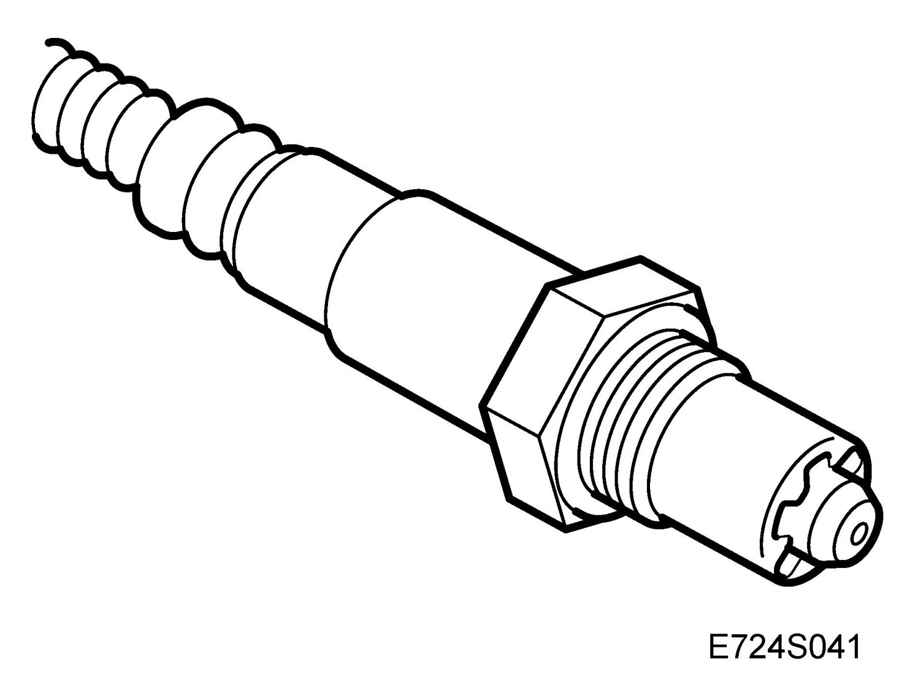
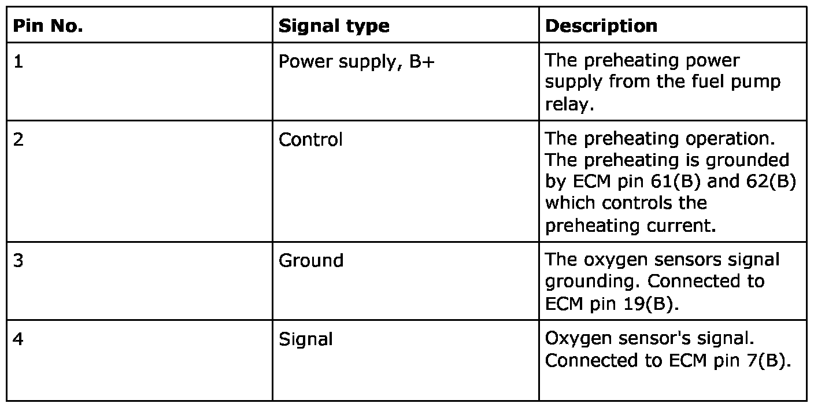
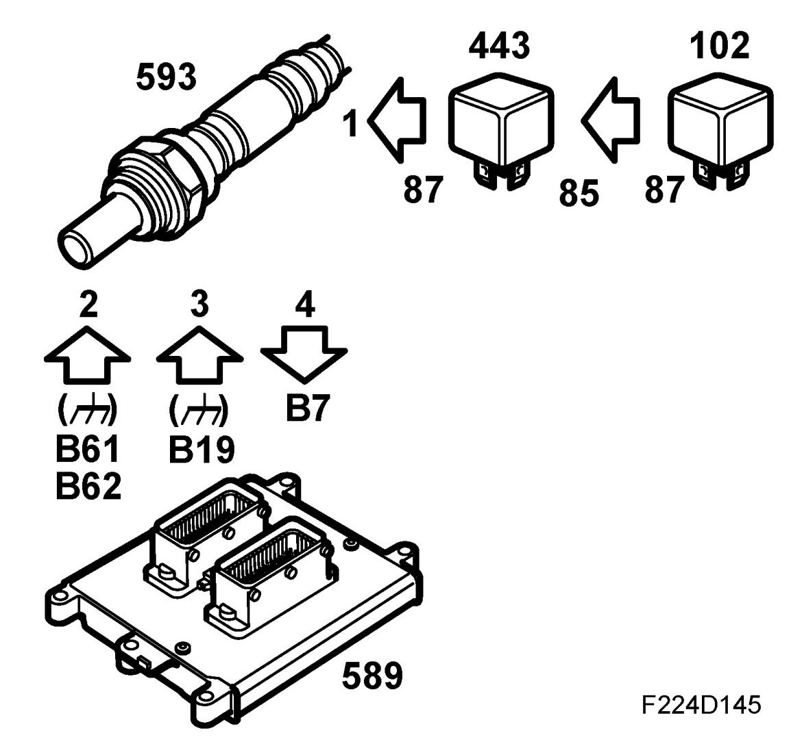
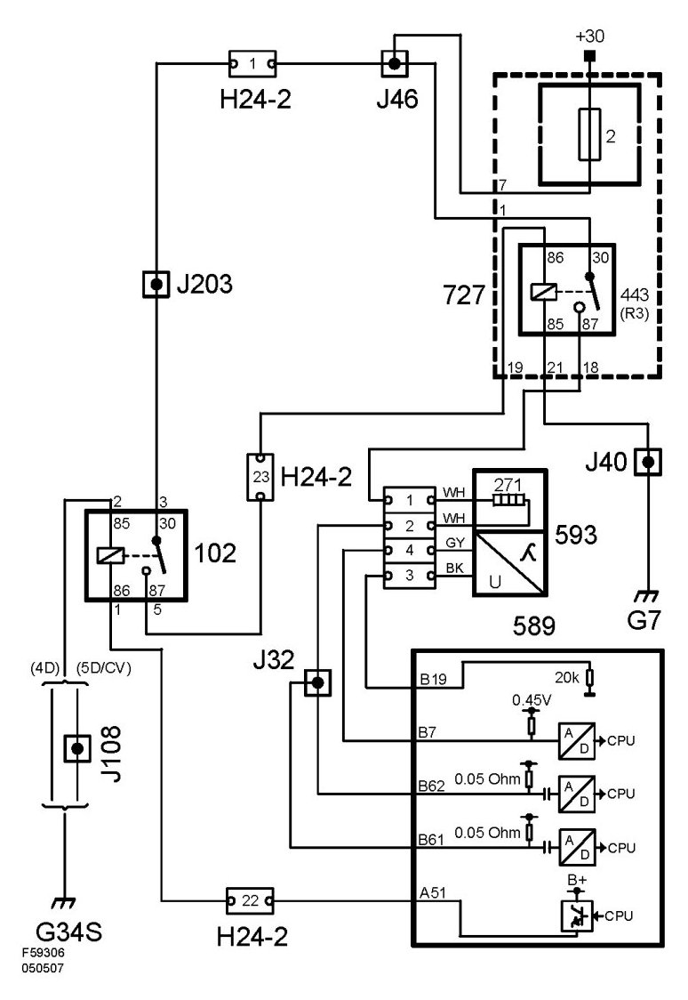

Rear Preheated Oxygen Sensor (593), T8
Rear Preheated Oxygen Sensor (593), T8
Location
Heated oxygen-sensor, rear (593)
Main task
In order to check the condition of the forward catalytic converter a further oxygen sensor is fitted to the exhaust system after the catalytic converter.This is called oxygen sensor 2 or O2S 2.
Type

Connection



In order to quickly generate a signal after start the oxygen sensor must be preheated. In order to control the heating effect the grounding of the circuit is pulse width modulated.
The preheating is activated as soon as the coolant temperature exceeds 30 degrees C.
The control module estimates the exhaust gas temperature on the basis of load and engine speed. At high temperatures the preheating is disconnected to avoid damaging the oxygen sensor.
If the catalytic converter is damaged its oxygen storage capability is reduced. The normal swings in the lambda control will then be noted from the voltage signal of the second oxygen sensor and a trouble code will be set. The catalytic converter is checked once every drive cycle.
The signal value of the second sensor is also used to adjust the lambda control to compensate for minor faults in the first sensor.
The best emission values are obtained when the voltage from oxygen sensor 2 is 0.6V.
If the voltage is, for example, 0.3 V the engine has a slightly weak mixture. The lambda control factor will then be locked in the rich condition for a certain number of cycles before the voltage from sensor 1 is allowed to influence the factor again.